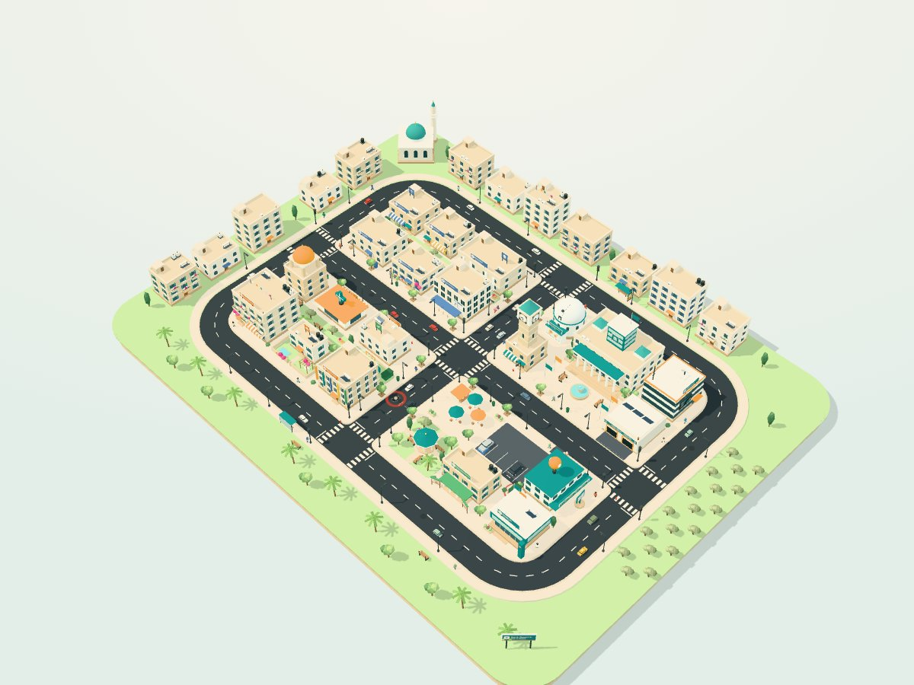

No reports here. The city is calm. Try the training tools below to create a problem.
Add a crew
How to use the city
Everything starts from the panel on the left.
Click a building to open it · Drag to move · Scroll to zoom
RoadNa CityWorld
Every building is a RoadNa JO page. Choose one to visit it.

The interactive 3D city needs WebGL and JavaScript. Every building below is a normal link.
Open the screen directory · Resident and admin buildings open frontend previews with sample data.
Four districts link to RoadNa JO services. Click a building, read its card and enter. Double-click enters straight away.
Potholes make cars stop and swerve; enough of them and traffic backs up. Broken lights, full bins and blocked drains also wear on residents.
Every report appears in the Reports list on the left. Each crew has one kind of vehicle: Roads (asphalt patch truck), Lighting (bucket truck), Sanitation (compactor) and Drainage (jetter tanker). Open a report and send a crew with the right vehicle, or leave Auto-assign on. Turn RoadNa off to see how slowly problems surface without it.
Open reports and slow traffic lower resident mood. Let it fall too far and a protest gathers outside City Hall.
1–5 tools · Space pause · Q/E rotate · +/− zoom · arrow keys move · R reset · L reports · C crews · D directory · H photo mode · Esc close
This is a frontend preview. The simulation is illustrative: no reports are created, nothing is saved and no real crews are dispatched.